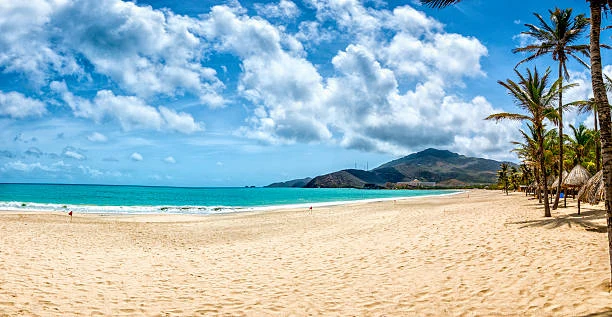

Dados
- Área:
- 916.445 km²
- População:
- 28.598.076 (estimativa)
- Capital:
- Caracas
- Idiomas:
- Espanhol e línguas indígenas
- Moeda:
- Bolívar (VES)
- Fuso horário:
- UTC−4
- Código de chamada:
- +58
- TLD da Internet:
- .ve
Clima

Mérida, Venezuela · valores estáticos
- Temperatura:
- 8 °C
- Condições:
- Parcialmente nublado
- Vento:
- 10 km/h
- Sensação térmica:
- Calculando…